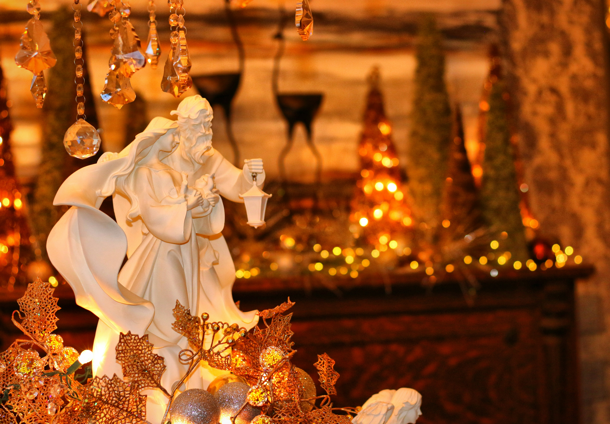

Day 1

star on a tree
"Why do you think we put a star on top of the tree?"
Day 2

holiday decorations
"What is your favourite thing about our holiday decorations?"
Day 3

family laughing
"Can you tell a story about a funny thing that happened at Christmas?"
Day 4
"If you could give a present to anyone in the world, who would it be and why?"
Image: wrapped gifts (rod-long-ObixZt3pxIE-unsplash.jpg)
Day 5
"What is one small thing that makes the holidays feel special to you?"
Image: cozy lights (gautam-krishnan-03bRpgDOzaY-unsplash.jpg)
Day 6
"What is your favourite smell at Christmas (cookies, pine, spices)?"
Image: holiday baking (sincerely-media-nvJnDGoM2H0-unsplash.jpg)
Day 7
"Which holiday song makes you want to dance or sing along?"
Image: playing music (jon-tyson-5_eKieKQy1o-unsplash.jpg)
Day 8
"Tell us about a kind thing someone did for you this year."
Image: kindness (priscilla-du-preez-TjMjyo8-spg-unsplash.jpg)
Day 9
"If our family had a new holiday tradition, what would you like it to be?"
Image: new tradition idea (engin-akyurt-ZQJ1W5xOsnk-unsplash.jpg)
Day 10
"What is one thing you are grateful for this year?"
Image: gratitude (shalom-ejiofor-a3y4m6LIito-unsplash.jpg)
Day 11
"What was the best gift you ever received and why did you like it?"
Image: best gift (k-mitch-hodge-RYwc42Jqpxg-unsplash.jpg)
Day 12
"How do you think we can help someone who feels lonely at the holidays?"
Image: helping others (philippa-lowe-nznPsgHnFBw-unsplash.jpg)
Day 13
"What's your favourite family story about when you were little?"
Image: family story (lennon-caranzo-qEXsouZzHwk-unsplash.jpg)
Day 14
"If you could invent a festive game, what would it be like?"
Image: festive game (gautam-krishnan-muzOU31gLBg-unsplash.jpg)
Day 15
"Do you prefer giving gifts or receiving them? Why?"
Image: giving gifts (davidson-l-u-n-a-TuLhoLqnif8-unsplash.jpg)
Day 16
"What is something about Christmas that makes you feel calm or safe?"
Image: calm and safe (wisconsinpictures-gRr_QTJuPN0-unsplash.jpg)
Day 17
"What is a favourite food you love to eat at the holidays and who makes it best?"
Image: holiday food (kelly-sikkema-57_H5y498Yk-unsplash.jpg)
Day 18
"If you could give a surprise to our neighbourhood, what would it be?"
Image: neighbourhood surprise (suraj-shakya-6Q-oayoU5bA-unsplash.jpg)
Day 19
"How do you feel when there are lots of tasks and plans to do for the holidays?"
Image: busy holidays (engin-akyurt-ww0MRXg_r34-unsplash.jpg)
Day 20
"What does 'home' mean to you during the holidays?"
Image: home feelings (ben-white-oAU4YHeMFSI-unsplash.jpg)
Day 21
"If you could spend the day with any character from a story, who would it be and why?"
Image: story character (tim-umphreys-d0NN5-kyN7U-unsplash.jpg)
Day 22
"What is one memory you want to keep from this holiday season?"
Image: holiday memory (ehteshamul-haque-adit-HF7u3alR-3E-unsplash.jpg)
Day 23
"Is there something you want to say 'thank you' for this year? Who and why?"
Image: saying thanks (saravana-sathish-settu-ZQQ9TFrwpg8-unsplash.jpg)
Day 24
"What is your favourite thing about the holidays that you hope never changes?"
Image: favourite thing (aleksei-tertychnyi-vPHEtEwrktQ-unsplash.jpg)